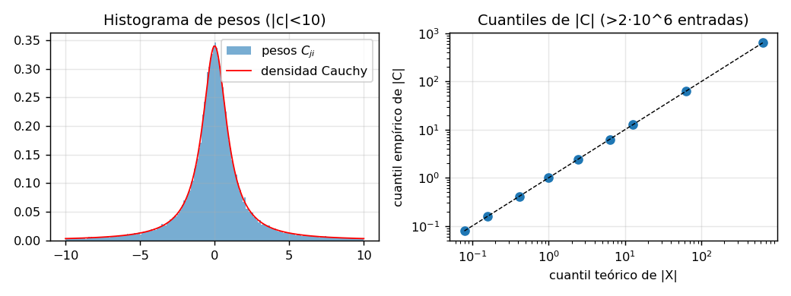
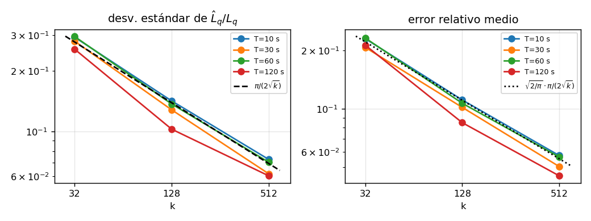
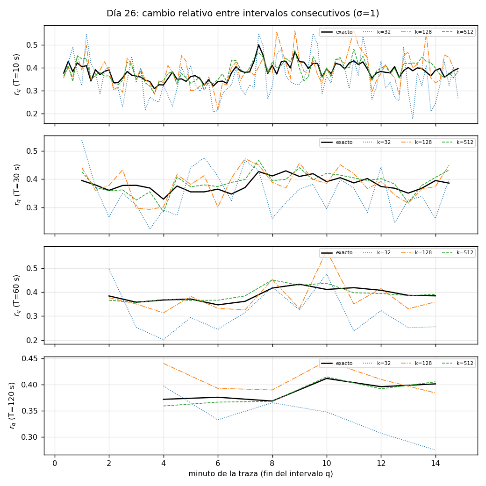
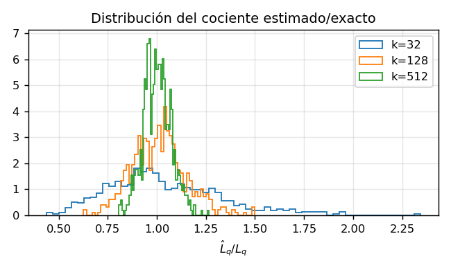
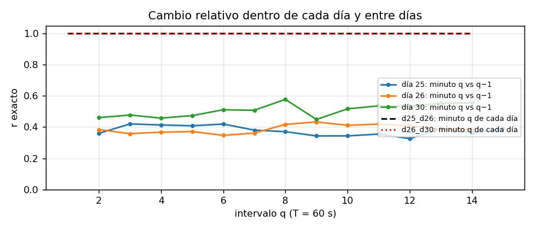
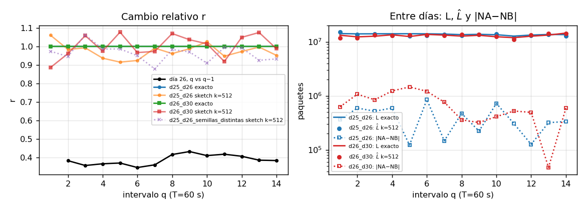

5. Resultados
Cifras obtenidas con reproducir.sh sobre las trazas reales. Los CSV y las tablas LaTeX están en resultados/tablas/, y las figuras en resultados/figuras/.
Trazas convertidas
| Día | Frames | IPv4 (usados) | IPv6 (descartados) | Duración | Fuera de orden |
|---|---|---|---|---|---|
| 25 | 107.844.763 | 103.704.262 | 4.140.499 | 900,05 s | 0 |
| 26 | 106.455.519 | 102.202.137 | 4.253.380 | 899,93 s | 0 |
| 30 | 95.676.627 | 93.170.763 | 2.505.864 | 899,93 s | 0 |
Frames = IPv4 + IPv6 + no-IP (2 en los días 25 y 26; ver trazas/*.pcap2bin.txt). Coinciden con los 107,8 M, 106,5 M y 95,7 M del enunciado.
Actividad 1: verificación (todo OK)
| Prueba | Resultado |
|---|---|
| Valores de referencia del PDF | Mezclar(0)=0xE220A8397B1DCDAF; Entrada(42,1..3,192.168.0.1) = −0,889927650 / −2,088573016 / −26,926917514. Coinciden exactamente. |
| mediana(|C|) sobre 2,5·10⁶ entradas | 0,9986. Los cuantiles 0,05 a 0,999 coinciden con $\tan(\pi p/2)$. |
| Determinismo | 10⁵ triples reevaluados en otro orden dan el mismo valor bit a bit; el orden de llegada cambia el resultado en 1,5·10⁻¹³ (redondeo). |
| Una IP con cuenta c (50 semillas × 4 valores de c) | media de $\hat L/c$ = 1,040 / 1,005 / 0,990 y desviación 0,296 / 0,136 / 0,065 para k = 32 / 128 / 512 (teórica 0,278 / 0,139 / 0,069). |
| Caché B=4096 vs Actualizar por paquete (día 26, T=10 s, intervalos 1–2) | Diferencia relativa de $\hat L$: 3,9·10⁻¹², 3,6·10⁻¹² y 2,9·10⁻¹³ para k = 32, 128 y 512; φ = 0,207. |

Actividad 2.1: intervalos consecutivos, día 26
D = 899,927 s. Comparaciones emitidas: 88, 28, 13 y 6 para T = 10, 30, 60 y 120 s, que coinciden con Q − 2, Q = ⌈D/T⌉ = 90, 30, 15, 8. La referencia exacta da los mismos números.
| T | k | n | error medio | p95 | desv $\hat L/L$ | $\pi/(2\sqrt k)$ |
|---|---|---|---|---|---|---|
| 10 | 32 | 440 | 0,230 | 0,639 | 0,293 | 0,278 |
| 10 | 128 | 440 | 0,111 | 0,269 | 0,142 | 0,139 |
| 10 | 512 | 440 | 0,058 | 0,143 | 0,073 | 0,069 |
| 30 | 32 | 140 | 0,207 | 0,560 | 0,280 | 0,278 |
| 30 | 128 | 140 | 0,102 | 0,265 | 0,128 | 0,139 |
| 30 | 512 | 140 | 0,050 | 0,119 | 0,062 | 0,069 |
| 60 | 32 | 65 | 0,232 | 0,559 | 0,296 | 0,278 |
| 60 | 128 | 65 | 0,107 | 0,243 | 0,137 | 0,139 |
| 60 | 512 | 65 | 0,057 | 0,132 | 0,070 | 0,069 |
| 120 | 32 | 30 | 0,213 | 0,448 | 0,256 | 0,278 |
| 120 | 128 | 30 | 0,085 | 0,190 | 0,103 | 0,139 |
| 120 | 512 | 30 | 0,045 | 0,108 | 0,060 | 0,069 |



Memoria
| T | IPs distintas (máx. por intervalo) | tabla hash exacta | sketch k=512 + caché |
|---|---|---|---|
| 10 | 264.303 | 19,9 MiB | 8 KiB + 32 KiB = 40 KiB |
| 30 | 614.862 | 48,1 MiB | |
| 60 | 1.166.997 | 92,8 MiB | |
| 120 | 2.202.842 | 178,8 MiB |
Caché: φB y throughput (T = 60 s, k = 512)
| B | memoria | φB | tiempo | paquetes/s |
|---|---|---|---|---|
| sin caché (1 intervalo, 6,92 M paquetes) | 0 | 1,000 | 101,6 s | 68.089 |
| 256 | 2 KiB | 0,267 | 646,3 s | 158.143 |
| 4096 | 32 KiB | 0,210 | 428,8 s | 238.347 |
| 65536 | 512 KiB | 0,186 | 421,4 s | 242.530 |
¿Por qué φ no baja de ~0,19? Cada IP distinta de cada intervalo cuesta al menos una llamada, lo que da una cota inferior $\sum_q |\text{supp}(x_q)|/N = 0{,}168$. El 97,6 % de los destinos del día recibe un solo paquete, casi todos de un barrido ICMP. Con B = 65536 la caché queda a un 10 % de esa cota.
Actividad 2.2: comparación entre días
| Comparación (σ, T = 60 s) | err. medio / p95 por intervalo | r por intervalo | L traza completa | $\hat L$ (suma de sketches) | err. | |NA−NB| |
|---|---|---|---|---|---|---|
| 25 vs 26, misma σ | 0,038 / 0,079 | 0,9999 | 205.680.305 | 207.242.977 | 0,76 % | 1.502.125 |
| 25 vs 26, σ distintas | 0,045 / 0,102 | 0,9999 | 205.680.305 | 204.341.111 | 0,65 % | 1.502.125 |
| 26 vs 30, misma σ | 0,051 / 0,093 | 0,9999 | 195.036.458 | 193.644.669 | 0,71 % | 9.031.374 |
Evidencia de la anonimización: el mayor destino del día 25 (202.244.39.10: 23,3 M paquetes TCP, puertos de origen 443/80 en 77/20 %, 1.381 B) desaparece el día 26. En su lugar aparece 202.83.161.53, con el mismo perfil (16,2 M paquetes, 443/80 en 78/20 %, 1.376 B). Es el mismo servidor con otra etiqueta.


Semillas distintas
Entre días el error sigue bajo con σ distintas, pero por casualidad: con matrices distintas el sketch estima $\|a\|_1+\|b\|_1$, que aquí es casi igual a $\|a-b\|_1$ porque los soportes son casi disjuntos. Para ver el efecto real se compararon minutos consecutivos del mismo día, el minuto q con σ = 1 y el q−1 con σ = 2:
| Semillas | $\hat L / L$ medio | $\hat L/(N_q+N_{q-1})$ | error medio |
|---|---|---|---|
| misma σ | ≈ 1 | ≈ 0,39 | 3,4 % |
| σ distintas | 2,54 | 0,98 | 154 % |
Día 30: qué cambió
| día 25 | día 26 | día 30 | |
|---|---|---|---|
| TCP / UDP / ICMP | 69,8 / 8,7 / 19,6 % | 69,2 / 9,0 / 19,7 % | 57,7 / 17,1 / 22,8 % |
| destinos distintos | 14,80 M | 14,89 M | 21,71 M |
| destinos con 1 paquete | 14,45 M | 14,54 M | 21,26 M |
| … de ellos ICMP (barrido habitual) | 14,43 M | 14,51 M | 14,65 M |
| … de ellos UDP/53 | 902 | 791 | 6,58 M |
| puerto 53 sobre UDP | 1,5 % | 1,6 % | 43,0 % |
| r medio entre minutos consecutivos | 0,377 | 0,388 | 0,508 |
- Escaneo DNS: un solo origen (203.90.255.0, anonimizado) envía UDP/53 a 6,58 M destinos distintos, un paquete a cada uno.
- El barrido ICMP es estable los tres días (≈ 14,5 M destinos, y respuestas desde al menos 10⁶ orígenes).
- Menos TCP masivo: TCP baja de 70,8 M a 53,8 M paquetes. El mayor destino HTTPS del día 26 tenía 16,2 M paquetes; el del día 30, 7,3 M.
- Las 10 IPs que más aportan a $L_{26,30}$ explican el 27,8 % (grandes servidores HTTPS y destinos ICMP de cada día).